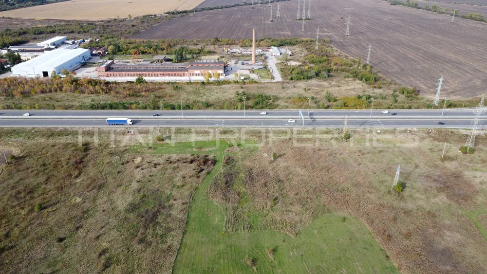

| НАЛИЧНИ ПАРЦЕЛИ |
| Местоположение |
Квадратура(кв.метри) |
Поземлен имот / Урегулируем поземлен имоти |
Град/Село |
Равен парцел/ С денивелация |
Цена(лева/евро) |
Описание |
Снимка |
| с.Яврово |
407 кв.м |
УПИ |
Село |
Равен |
17000 € |
Намира се в горната част на селото,с уникална гледка към цялата Тракийска низина.с.Яврово се намира на 11 км.от Асеновград и на 27 км.от Пловдив, с надморска височина - 1000 м.Парцелът е подходящ,за построяването на вила или къща,пригодено за целогодишно ползване или с цел инвестиция,за построяването на вила, семеен хотел или къща за гости.
Телефон за връзка: +359 89 *** **** |
|
| гр. Балчик (първи) |
417 кв.м |
УПИ |
Град |
Равен |
45000 € |
Парцелът се намира в центъра на град Балчик - до Общината, полицията и централния площад на града.
Върху него има останала постройка - един етаж. Разрешено е застрояване с височина до 10 м.
До парцела са прокрани всички необходими комуникации като ток и вода.
Телефон за връзка: +359 89 *** **** |
|
| гр. Хасково, м. Каменец |
2071 кв.м |
УПИ |
Град |
Равен |
45000 € |
Площта на имота е 2071 кв.м. в правилна форма с широко лице към пътя.
Имотът има партида за ток и вода, както и сондаж. Разполага с вилна сграда със застроена площ от 23 кв.м.на един етаж и селскостопанска постройка от 55 кв.м.
В съседство са фамилни къщи,а границите между парцелите са отделени с ограда.Имотът е подходящ както за жилищно строителство така и за всякакви бизнес проекти.
Телефон за връзка: +359 89 *** **** |
|
| с.Лозен, на магистрала Тракия |
1500 кв.м |
ПИ |
Село |
Равен |
112484 € |
Имота е 1500кв.м и се намира на първа линия на магистрала Тракия до отклонението за с.Нови Хан,със страхотна гледка към София и на 360 градуса.Подходящ за малък бизнес който би се рекламирал сам на това място.Имота попада в устройствена зона Смф2.
Телефон за връзка: +359 89 *** **** |
|
| гр. София, кв. Илиянци |
2520 кв.м |
УПИ |
Град |
Равен |
252000 € |
Парцелът, който се предлага е с площ от 2520 кв.м., в регулация, няма прекарани ток и вода. Теренът е със следните показатели за застрояване: плътност на застрояване 40/60 %; КИНТ 1,2; минимална озеленена площ 40/30 %. Парцела е с многофункционално предназначение за обществено обслужване, търговия, безвредни производства, жилища, спорт и атракции и други допълващи функции, без да се допускат обекти за дейности с вредни отделяния и влияния.
Телефон за връзка: +359 89 *** **** |
 |
| с. Долнослав |
850 кв.м |
УПИ |
Село |
Равен |
23008 €
|
Продаваме в село Долнослав, общ. Асеновград, обл. Пловдив:
Парцел, за жилищно строителство, в регулация, УПИ, с площ 850кв.м, лицето на парцела e 36 метра, с право на строеж до 10 метра, до нови къщи, в селото, с ток и вода на улицата. В него има три ореха. Подходящ е за инвестиция и строителство на самостоятелна къща, с двор.
Телефон за връзка: +359 89 *** ****
|
 |
| гр. Бяла |
530 кв.м |
УПИ |
Град |
Равен |
30000 € |
Имота се намира в един от най-предпочитаните за живеене и инвестиция райони на град Бяла. Лесен и бърз достъп до главни пътни артерии, административни учреждения, банки, училища, детски градини, автобусни спирки, детски площадки, аптеки, търговски центрове, супермаркети, козметични студия, заведения и туристически атракции.
Телефон за връзка: +359 89 *** ****
|
|
| с. Руен |
1670 кв.м |
УПИ |
Село |
Равен |
56780 € |
Оферта 60033 - Предлагаме ви за продажра парцел в село Руен. Сменен статут, с готови становища за ЕВН и ВиК. На няколко километра от летище Пловдив. Уникална панорама. Само три парцела в линията, това е четвърти, последен, което прави невъзможно преминаването на МПС. Парцелът е подходящ за жилищно строителство.
Телефон за връзка: +359 89 *** ****
| |
| с. Марково |
700 кв.м |
УПИ |
Село |
Равен |
42000 € |
Парцелът е със статут за жилищно строителство и има възможност закупуване на съседните пърцели.Този имот е идеален както за инвестиционна цел така и за построяване на вашият мечтан дом.
Телефон за връзка: +359 89 *** ****
|  |
| гр. Несебър |
10822 кв.м |
УПИ |
Град |
Неравен |
330000 € |
Атрактивен парцел 10822 м2 с лице 200 м на гл.път Бургас-Варна, на 50 м от м-н Жанет, включен в градоустройствения план на гр.Несебър и с предстояща регулация. Отлична локация! Имотът е с директен излаз на главния път Бургас - Варна, а също така е с лице към второстепенен път.
Телефон за връзка: +359 89 *** ****
|
|
| гр. Балчик (втори) |
6000 кв.м |
УПИ |
Град |
Равен |
150000 €
|
Продавам парцел от 6д/ка. в гр.Балчик по главен път Е87 на възлово кръстовище срещу бензиностанция Лафи гр.Балчик статута е зем. земя но по ОУП гр.Балчик след промяна на статута е предвиден за строителство на крайпътно заведение,мотел,бензиностанция,ТИР паркинг,магазини и др. Зависи за каква промяна ще се направи и за какво.
Телефон за връзка: +359 89 *** ****
|
|
| с. Равно поле |
3600 кв.м |
ПИ |
Село |
Равен |
89000 € |
Парцел 3600 м2 в с.Равно поле, подходящ за комплекс от къщи, на 10км от Околовръстното на София. Отлична локация!
Имотът е равен, не е в регулация, с лице на път и е в непосредствена близост до къщите в селото, което е газифицирано. Съседен подобен имот е захранен с ток, вода и газ.
Телефон за връзка: +359 89 *** ****
|
|